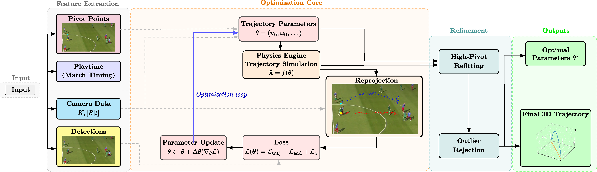
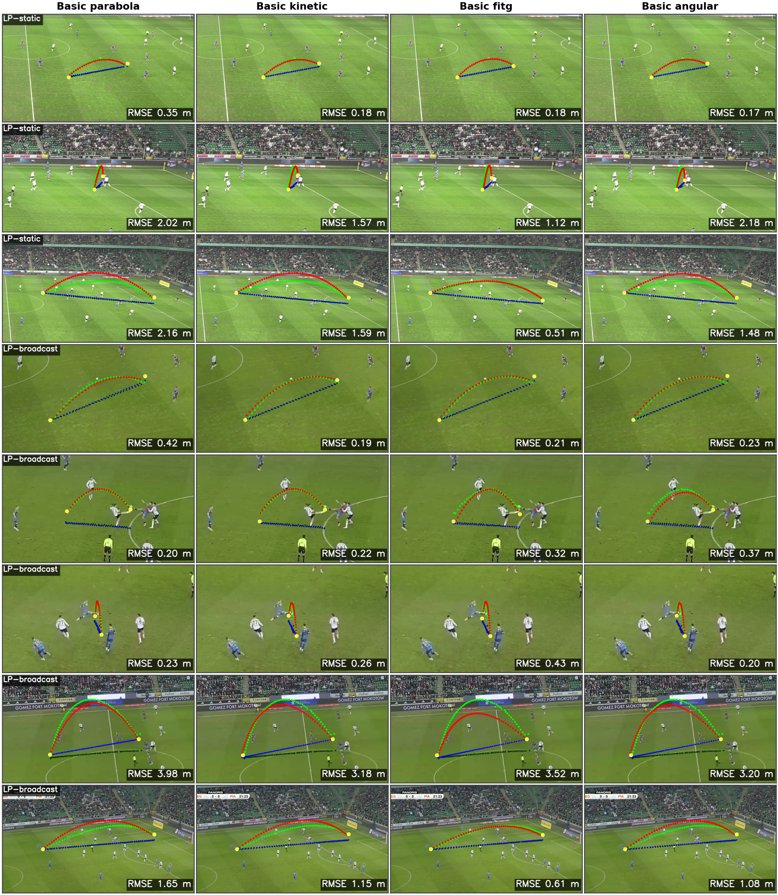
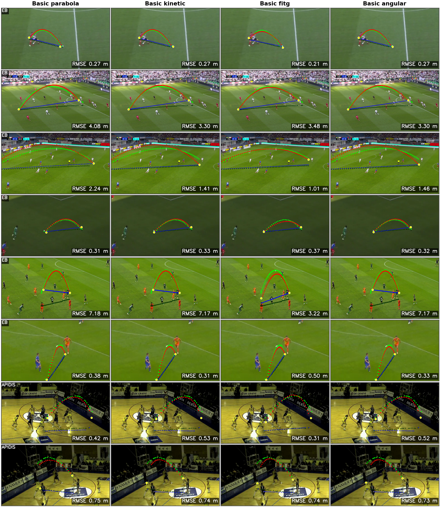

We study physics-based 3D ball trajectory reconstruction from monocular videos. Our pipeline segments the trajectory at contact events and fits each segment by optimizing a forward-simulated flight model with a reprojection-based objective. We implement seven arc models of increasing complexity, ranging from gravity-only parabolas to MuJoCo simulations with drag, spin, and fluid forces. All seven are evaluated under end-to-end monocular reconstruction, with four additionally evaluated under multi-view 3D reconstruction.
The two protocols yield reversed model rankings: a model with fitted gravitational acceleration achieves the best monocular accuracy on all soccer evaluation settings, yet a spin-decomposition model leads on four of five datasets when fitted to 3D ground truth. These results suggest that observation noise and single-view geometric ambiguity, rather than model expressiveness, are the primary limiting factors for monocular soccer reconstruction.
We evaluate across five datasets spanning nearly 6,000 trajectory segments and publicly release two new soccer datasets with triangulated 3D ground truth along with segment-level annotations for APIDIS and ISSIA-3D.

Overview of the 3D Trajectory Reconstruction Pipeline. A monocular input video, ball and player features and camera calibration (K, [R|t]) are given. Pivot points and playtime from manual annotation segment the sequence, which is fitted in an optimization loop: a physics engine simulates and reprojects the 3D path to iteratively improve trajectory parameters. Finally, the pipeline corrects high pivots, re-fits the affected segments, and rejects invalid segments.
Comparison of arc physics models for projectile motion simulation. All models share the same straight (on-ground) model with 5 parameters. Nθ denotes the number of free parameters optimized per arc segment.
| Model | Framework | Gravity | Drag | Magnus | Spin (ω0) | Nθ |
|---|---|---|---|---|---|---|
| Basic parabola | ODE | fixed | — | — | — | 6 |
| Basic kinetic | ODE | fixed | k3 | — | — | 7 |
| Basic fitg | ODE | fitted* | k3 | — | — | 8 |
| Basic angular | ODE | fixed | k3 | kl, ks | — | 9 |
| MuJoCo kinetic | MuJoCo ODE | fixed | fixed† | — | — | 6 |
| MuJoCo angular | MuJoCo ODE | fixed | fixed† | — | ✓ | 9 |
| MuJoCo ellipsoid | MuJoCo ODE | fixed | CDblunt, CDang | CM | ✓ | 12 |
* Gravity is fitted rather than fixed, acting as a proxy for unmodelled forces.
† MuJoCo's inertia-based fluid model provides drag with fixed parameters derived from
fluid density and body inertia.
Balanced mAP (mAPbal) and arc-specific mAP (mAParc); higher is better. Best per column in bold.
| Model | LP-static | LP-broadcast | EB | SW | ISSIA-3D | APIDIS | ||||||
|---|---|---|---|---|---|---|---|---|---|---|---|---|
| bal | arc | bal | arc | bal | arc | bal | arc | bal | arc | bal | arc | |
| basic parabola | .325 | .274 | .493 | .330 | .533 | .357 | .421 | .351 | .260 | .159 | .577 | .577 |
| basic kinetic | .332 | .289 | .508 | .359 | .532 | .359 | .414 | .355 | .253 | .153 | .476 | .476 |
| basic fitg | .343 | .307 | .530 | .397 | .557 | .412 | .459 | .371 | .262 | .163 | .507 | .507 |
| basic angular | .336 | .296 | .517 | .377 | .544 | .383 | .412 | .353 | .255 | .157 | .463 | .463 |
| MuJoCo kinetic | .329 | .282 | .496 | .337 | .525 | .341 | .422 | .352 | .260 | .157 | .552 | .552 |
| MuJoCo angular | .330 | .283 | .499 | .341 | .527 | .345 | .422 | .351 | .260 | .158 | .543 | .543 |
| MuJoCo ellipsoid | .324 | .271 | .494 | .334 | .522 | .339 | .437 | .367 | .261 | .160 | .547 | .547 |
Frame-weighted mean 3D error (dm) and arc-specific error (dm); lower is better. Per-frame errors capped at 25 dm. Best per column in bold.
| Model | LP | EB | SW | ISSIA | APIDIS | |||||
|---|---|---|---|---|---|---|---|---|---|---|
| ē | ēa | ē | ēa | ē | ēa | ē | ēa | ē | ēa | |
| parabola | 3.16 | 4.68 | 3.80 | 5.88 | 1.92 | 7.24 | 5.90 | 3.64 | 4.55 | 4.55 |
| kinetic | 3.20 | 4.74 | 3.68 | 5.26 | 1.86 | 6.05 | 5.54 | 2.80 | 3.68 | 3.68 |
| fitg | 2.75 | 3.12 | 3.48 | 4.14 | 1.78 | 5.89 | 5.34 | 2.36 | 3.12 | 3.12 |
| angular | 2.24 | 1.83 | 3.28 | 3.32 | 1.83 | 5.77 | 5.22 | 2.08 | 2.56 | 2.56 |
Mean 3D error (m) by camera type on LP for the two best-performing models.
| Model | LP-static | LP-broadcast | ||||
|---|---|---|---|---|---|---|
| Full | Str | Arc | Full | Str | Arc | |
| basic fitg | 0.93 | 0.74 | 1.44 | 1.24 | 0.85 | 2.59 |
| basic angular | 0.89 | 0.67 | 1.48 | 1.20 | 0.80 | 2.62 |
The ranking reversal between protocols reflects an observation-noise bottleneck: monocular geometric ambiguity prevents spin-decomposition models from exploiting their extra parameters, so the single-parameter basic fitg model suffices under 2D fitting, whereas 3D inputs unlock the richer basic angular model. This shows that—among the models tested—observation noise and the inherent geometric ambiguity of monocular reconstruction, rather than model expressiveness, are the current bottleneck.


@InProceedings{Grad_2026_CVPR,
author = {Grad, {\L}ukasz and Czajkowski, Krzysztof M. and Varashylau, Aliaksandr},
title = {Physics-Based 3D Ball Trajectory Reconstruction from Monocular Soccer Video: A Multi-Model Benchmark},
booktitle = {Proceedings of the IEEE/CVF Conference on Computer Vision and Pattern Recognition (CVPR) Workshops},
month = {June},
year = {2026}
}